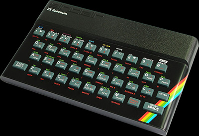
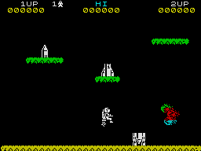

The legendary rubber-keyed ZX Spectrum was for many millions of Britons their first introduction to computing. Originally released in April 1982, it had been designed (under the working name of "ZX82") with the same philosophy in mind as with the ZX81 - namely, to be the cheapest colour home computer on the market. The hardware was designed by Richard Altwasser of Sinclair Research, while the software was written by Steve Vickers (who subsequently wrote the Spectrum manual), on contract from Nine Tiles Ltd, the authors of Sinclair BASIC. The famous keyboard owed its looks to Sinclair's industrial designer Rick Dickinson, who also designed the cases of the ZX81 and ZX80. Although the outward appearance of the Spectrum remained consistent until late 1984, its hardware went through a number of changes - see the 48K board revision page for details.

The machine was a considerable advance on the ZX81. It had a larger memory; it had colour (hence the name, Spectrum); it had sound, albeit a tinny loudspeaker capable of little more than bleeps. Even so, in terms of technology it was distinctly inferior to Sinclair's main rival, the BBC Micro. Reviewers rightly pointed out the machine's slowness and graphical limitations - although it had a 256x192 pixel resolution and a choice of eight colours, the catch was that you could only use two colours per 8x8 pixel square, leading to the infamous "colour clash" problem (right). There was also an irritating "dot crawl" effect resulting from problems in the graphics circuitry.However, its great advantage was (as usual with Sinclair) its low cost and simplicity. The Spectrum was initially released in two versions, outwardly identical - a 16K machine for £125 and a 48K version for £175. The 16K version was rapidly superseded by its more capable big brother - it could be upgraded using a kit available from Sinclair - and by the end of 1982 the market had already swung heavily in favour of the 48K Spectrum.
Production of the Spectrum started at 20,000 a month, with 300,000-400,000 machines expected to sell in the first year. Unfortunately it did not work out quite like that. Demand was enormous, and the first machines did not reach the market until June 1982. By July 1982, Sinclair already had a backlog of 30,000 orders. The situation worsened through the summer, with delivery delays of three months becoming commonplace. In October the company was severely rebuked by the Advertising Standards Authority for failing to meet its promise of "28-day delivery". The Spectrum was also very popular abroad, with the unfortunate result (for Sinclair) of numerous pirate clones of the machine being produced.
The delivery problems were eventually resolved, and by March 1983 more than 200,000 Spectrums had been sold by mail order, earning Sinclair Research nearly £55 million. Sales figures continued to increase as major High Street stores such as W.H. Smith, Boots, Curry's and Menzies got in on the booming market. Soon up to 15,000 Spectrums were being sold every week in the UK, doubtless assisted by the price of the 48K model being reduced to £129.95.
A major reason for the huge popularity of the Spectrum was the enormous range of software available for it. The ZX81 had spawned a huge cottage industry of computer programmers, many literally working from home, and these people quickly moved across to the Spectrum when that machine was released. Some published their products commercially, giving rise to the Spectrum software industry, but many more did it simply to learn about programming. Few self-respecting computer magazines appeared without program listings which one could type in. This had significant long-term consequences - it fostered an enormous pool of programming talent, to this day allowing Britain to punch far above its weight in the world software market.